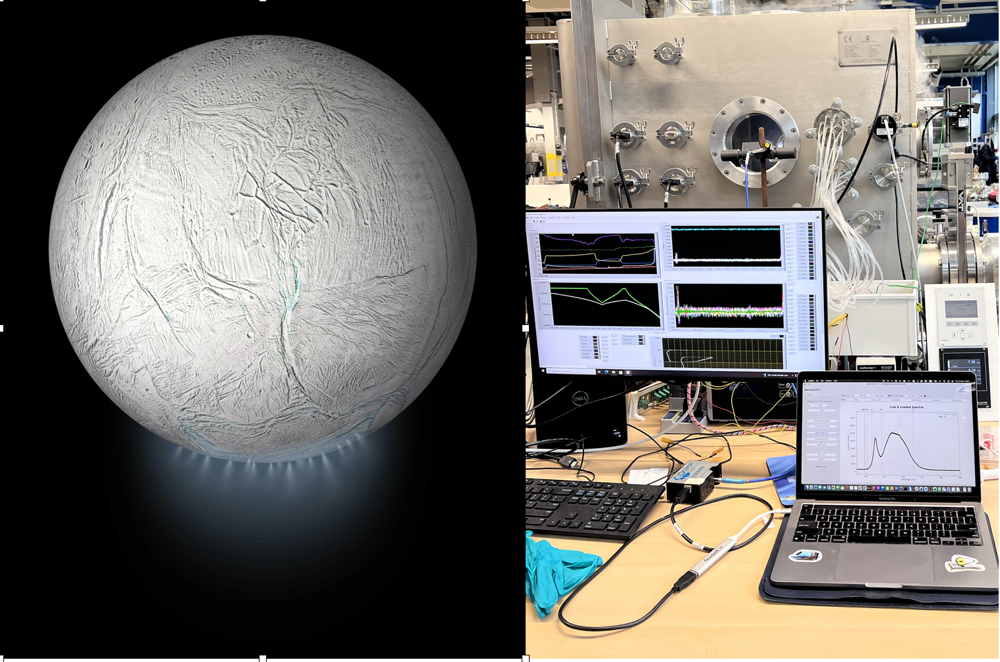
SPACE SCIENCE · ASTROPHYSICS · SCIENTIFIC INSTRUMENTATION
Exploring the Universe Through Observation, Simulation & Instrumentation
From galaxies and black-hole environments to planetary spectroscopy, hyperspectral imaging and space exploration.
Current Projects and Research

Hydrodynamic simulation - HDGAS
We present hydrodynamic simulations of the chemical evolution of the interstellar medium (ISM) gas influenced by the feedback from active galactic nuclei (AGN), coupled with the CHIMES code to treat the radiative cooling, AGN heating, and chemistry. We focus on the central 200 pc around the black hole (BH) where the AGN outflows and radiation couple to the ISM. By making an Adaptive Mesh Refinement grid model and radiative transfer for a given geometrical distribution of gas and/or dust, we attempt to discern between the conflicting explanations for the apparently counterrotating gas in the AGN-dominated galaxy NGC 1068 (Raouf et al. 2023). The project is part of the Moppex project portfolio.
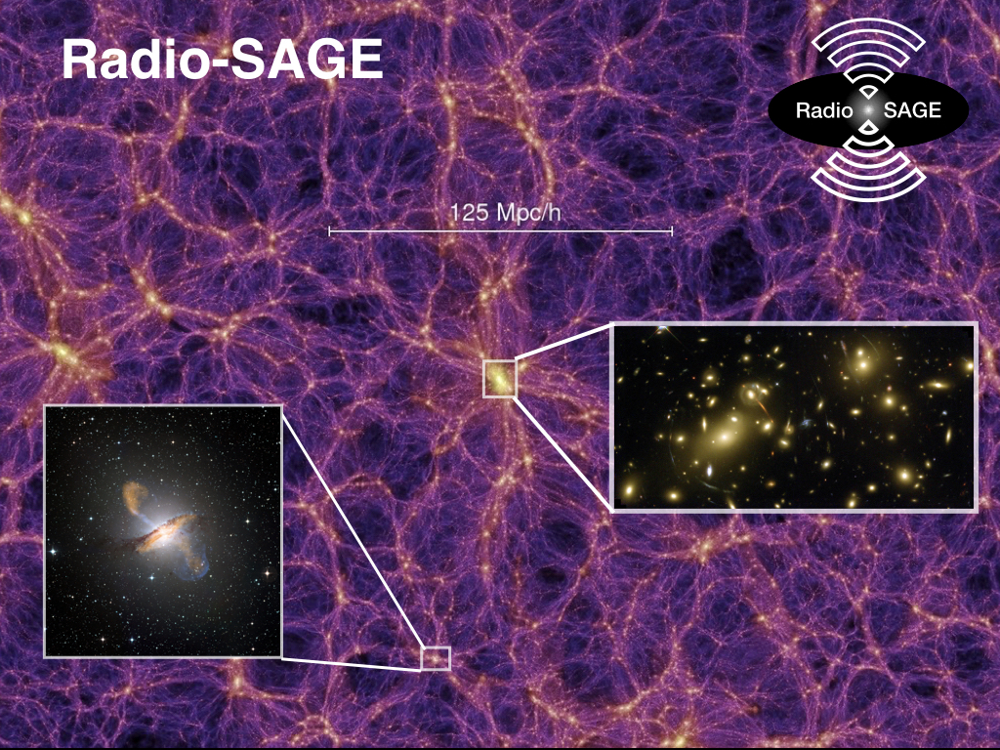
Radio-SAGE
We describe new efforts to model radio active galactic nuclei (AGN) in a cosmological context in Radio-SAGE semi-analytic model with observational consistent hot gas density profile. Our new method tracks the physical properties of radio jets in galaxies, including the evolution of radio lobes and their impact on the surrounding gas. For the full description of the model see Raouf et al. (2017) and Raouf et al. (2019). Radio-SAGE will run on any N-body simulation whose trees are organised in a supported format and contain a minimum set of basic halo properties.
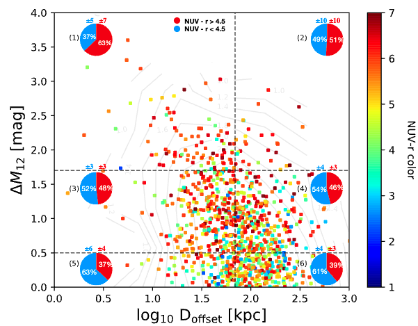
Stellar population
We investigate on the stellar population of galaxies in different dynamical halo sate using the GAMA, GALEX and WISE galaxy surveys. We found that the BGGs of unrelaxed groups have significantly bluer NUV-r colours than in relaxed groups independent of the dust mass and morphology. Such that the SFRs and stellar metallicities tend to be higher in unrelaxed systems, perhaps due to their more massive building blocks (Raouf et al 2019b).
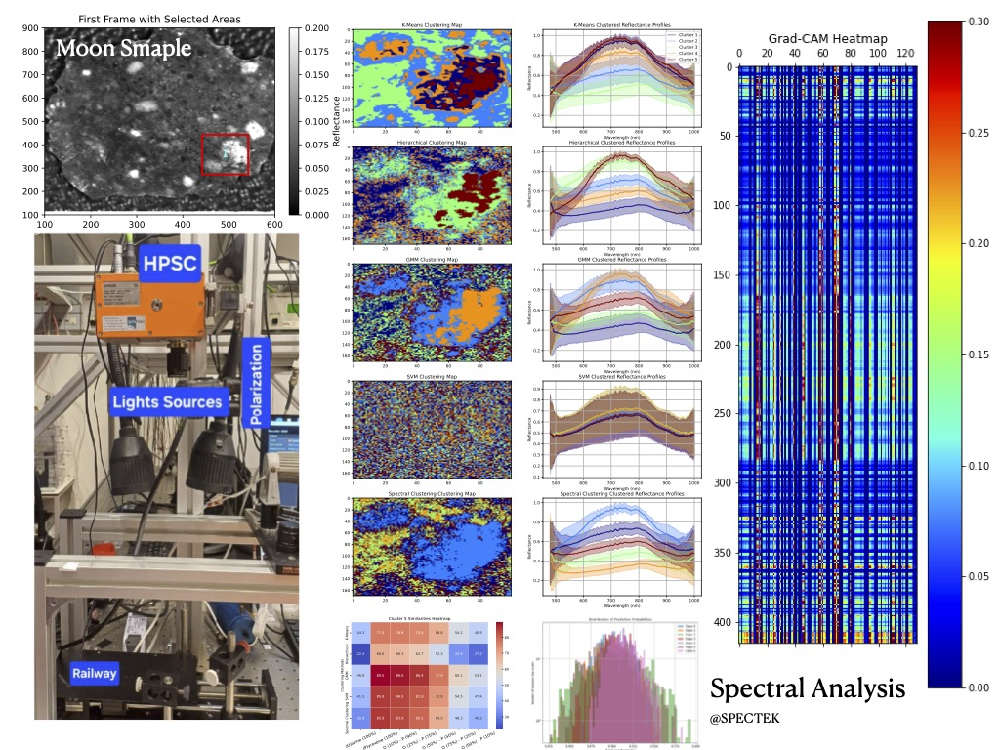
Spectral Analysis - Lunar Mineralogy
This study involves the use of a sophisticated hyperspectral imaging system designed to capture detailed spectral and spatial information about the Moon's surface. This system consists of a hyperspectral camera, a complementary metal-oxide semiconductor (CMOS) sensor, six 150W halogen lamps, and a 40×20 cm Lab-scanner. The SPECIM FX10 hyperspectral camera (Spectral Imaging Ltd.) utilizes a pushbroom scanning technique, which enables efficient data acquisition. Minerals like pyroxene, olivine, plagioclase, and ilmenite exhibit distinct absorption features in different wavelength ranges, making them identifiable through hyperspectral analysis. To further enhance mineral identification and mapping, machine learning techniques, such as CNN classification algorithms and clustering methods, can be employed to analyze the hyperspectral data.
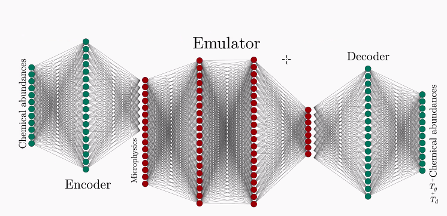
Neural Network
There are some chemical networks which use external libraries for solving thermochemistry as well as cooling during hydrodynamic simulations. In many cases, non-equilibrium chemistry dominates the overall cost, by quite a large margin. It has been shown that chemical evaluations in neural networks can take much less time than conventional numerical solutions for radiative transfer problems. The purpose of this study is to demonstrate the advantages of using neural networks over conventional numerical chemistry solvers through comparison of chemical evolution results using hydrodynamic simulations (Gizmo Chemulator). The intensity maps will be produced using both chemical network methods and the radiative transfer code for dust and lines as part of an extension of this project. The project is part of the Moppex project portfolio.
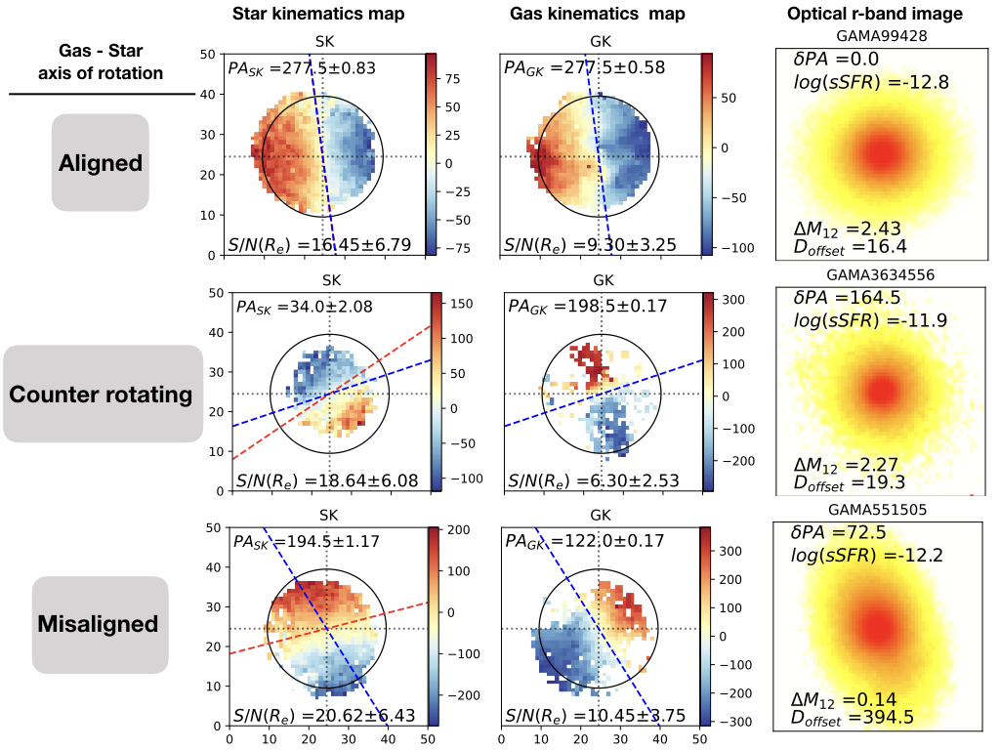
Galaxy kinematics
In the kinematic properties of galaxies, we study the connection between the dynamical state of groups and the stellar and gas dynamics of BGGs using SAMI galaxy survey. We found that it takes time for galaxies to become regular rotators and/or their gas and stars position angel to align and the time scale for realignment is similar to the time it takes for a group to become dynamically relaxed see Raouf et al. (2021). This project was part of the SAMI galaxy survey projects.
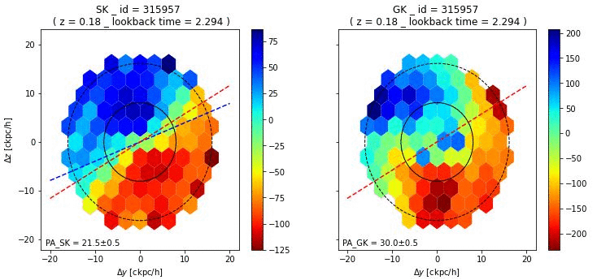
Convolution Neural Network
Our goal is to classify galaxies into fast and slow spinners using their kinematics parameters. We use convolutional neural networks as our model, and we train it on stellar images of labeled galaxies. We evaluate our model on a test dataset, and present the results using plots of loss and accuracy, and a confusion matrix that shows the false positive and true negative rates (ROC plot). We also use our model to predict the spin of some SAMI data samples that do not belong to either category.
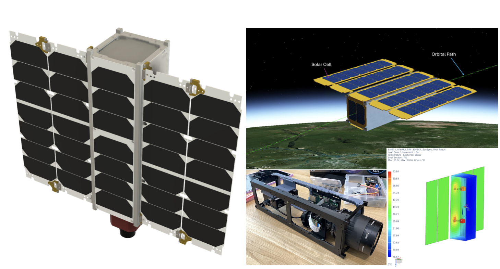
CubeSat - EMEC
The EMEC 3U CubeSat, designed for low Earth orbit deployment, features a payload centered on a hyperspectrograph and a single-point spectrograph for environmental monitoring through hyperspectral imaging. We will test and optical design the payload by evaluating the performance of both the single-point spectrograph and hyperspectral imager, focusing on capturing detailed spectral data across visible to near-infrared wavelengths to identify environmental signatures such as vegetation health and surface composition. See Raouf et al. (2026) and Website
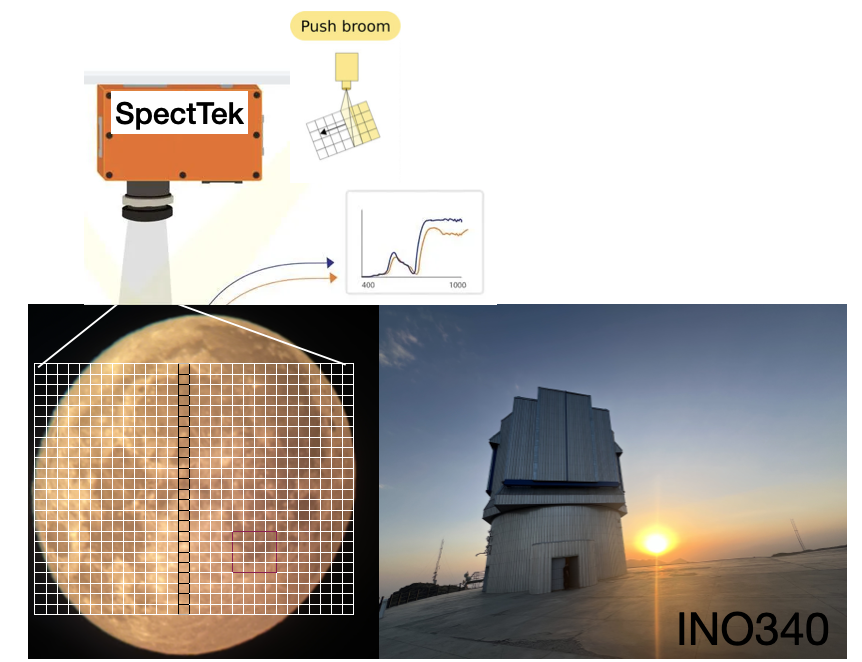
Hyperspectral push-broom techniques
This work serves primarily as a feasibility study for implementing hyperspectral push-broom techniques as a low-cost alternative framework for Integral Field Unit (IFU)-like spectroscopy of celestial objects. The study demonstrates that combining push-broom hyperspectral imaging with large-aperture telescopes can simultaneously recover spatial and spectral information across extended targets such as the Moon. Although the current setup is limited in spectral range and calibration accuracy, the results indicate that scaling the system to larger facilities, such as the INO340 telescope, could significantly improve spatial resolution, signal-to-noise ratio, and spectral stability. This approach highlights the potential of developing ground-based hyperspectral IFU systems for future planetary, lunar, and extended-object spectroscopy applications. See Fazel, Raouf et al. (2026).
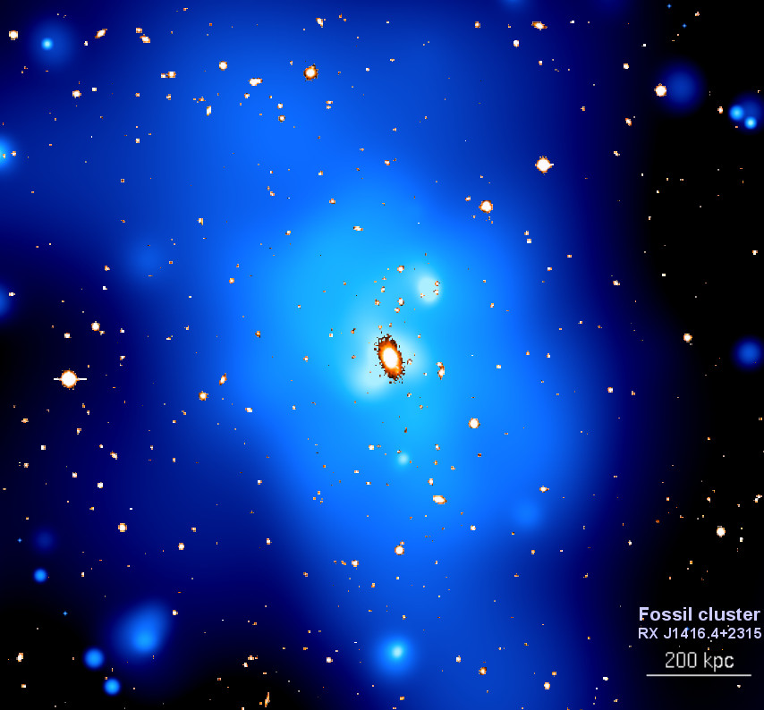
Galaxy Environment
One of the important and unresolved aspects of structure formation is the prediction of the structural and dynamical properties of a virialized object in different geometrical environment, due to a large reflection of the nonlinear dynamics involved. Despite the apparent complexity of these processes, observed properties of galaxies exhibit a number of striking regularities, including tight correlations between galaxy sizes, masses, luminosities, and dynamical properties. Moreover, there is a growing empirical evidence indicating that key properties of galaxies tightly correlate with properties of extended dark matter halos in which they form (Raouf et al, 2014, 2016, 2018).
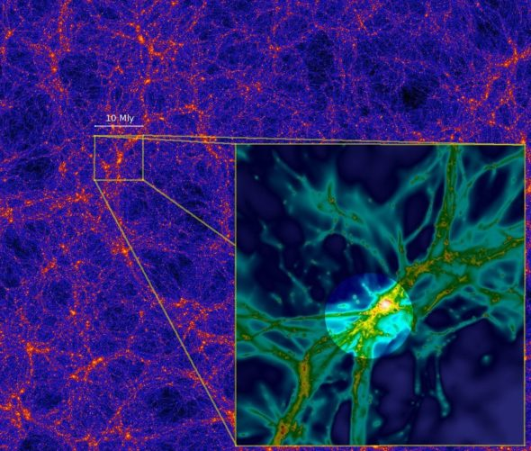
Cosmic web
The cosmic web is represents a vital source of gas from which galaxies can accreted. Without replenishment from the cosmic web, galaxies would quickly exhaust their gas supplies through star formation. Tracking the evolution of galaxies with considering the different distance to the skeleton help us understand how galaxy morphology, ages, gas fractions, and star formation rates are observed to steadily transform with environmental density across the cosmic web (in progress).
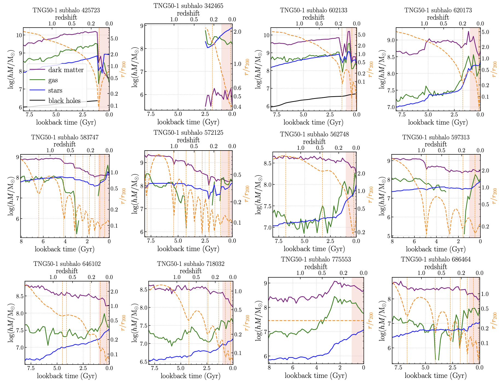
Very Young Galaxies
Galaxy formation models predict that a small fraction of present-day galaxies should have formed most of their stellar mass in the last billion years, as confirmed by the analysis of the spectra of SDSS galaxies. Here, we analyze such redshift-zero Very Young Galaxies (VYGs) in the Illustris-TNG simulations, with a focus on their frequency, properties, and formation paths (Raouf et al. in prep.).
Publications
My full list of publications are accessible through the SAO/NASA Astrophysics Data System,
sorted chronologically here.

Simulations Data
The Radio-SAGE and HDGAS simulations outputs are publicly available on Github,

Scientific Group — APEX
AstroPhysics and EXploration of space (APEX) is a research group led by Dr. Mojtaba Raouf, connecting observational astronomy, numerical simulations, spectroscopy, data analysis, artificial intelligence, and planetary exploration.
The group aims to link observation, theory, simulation, and experiment—from galaxy evolution and active galactic nuclei to hyperspectral studies of the Moon and other Solar System targets.
Explore the APEX research group →Technology & Industry — SpectTek
Alongside my academic research, I am involved with SpectTek, my company focused on scientific and technology development.
Visit SpectTek →Research Interest
I am a passionate researcher specializing in the fascinating fields of galaxy formation modeling, AGN (Active Galactic Nuclei) feedback, and dynamics of gas in galaxies. AGN, powered by supermassive black holes at the centers of galaxies, play a crucial role in regulating the evolution of their host galaxies. I have delved into the fascinating realm of AGN feedback, investigating the intricate interplay between the energetic processes occurring around black holes and the surrounding gas. By studying the impact of AGN feedback on galaxy evolution, I aim to decipher the mechanisms that shape the observed properties of galaxies, such as their stellar populations, star formation rates, and central black hole masses. Understanding the dynamics of gas within galaxies is essential for comprehending their formation, evolution, and overall behavior. I have focused my research on unraveling the complex interactions between gas components, such as molecular clouds, interstellar medium, and circumgalactic medium, and their influence on galaxy dynamics. By combining observational data with theoretical models, I strive to map the intricate gas flows, study the formation of stars, and investigate the feedback processes that drive galaxy evolution. I am currently part of the space engineering group at TU Delft Aerospace, where I contribute to the "Ice and Organics Enceladus Project." My work involves analyzing data from the Cassini-Huygens mission to investigate the life-supporting potential of water and ice plumes on Saturn’s moon, Enceladus.
Skills
I also serve as a Special Project Manager at EuroMoonMars Academy (LUNEX), where I gain practical experience in CubeSat development, lunar sample analysis, and Earth observation while collaborating with a multidisciplinary team from TU Delft and Leiden Observatory. I was also an Experimental Scientist at RespiQ, working on spectral analysis of plasma and hyperspectral imaging. Furthermore, I am a guest researcher at Leiden Observatory, where I analyse data from numerical modeling and hydrodynamic simulations using machine learning, in collaboration with scientists from Leiden and ESTEC. Beyond my research successes, I highly experience in big data analysis with a strong background in programming and numerical modeling and also experience in Machine Learning and Deep Learning. Expert in programming with Python, C, Fortran and SQL on big data handling and visualisation. I am a problem solvers and innovators and communicating complex concepts with non-technical audiences and colleagues. Ability in team management to archive the main goal efficiently and understand complex information. Further, I took the lead in performing spectral analysis and mineralogy studies of the Moon using a hyperspectrograph from SPECIM at our optical laboratory Leiden.